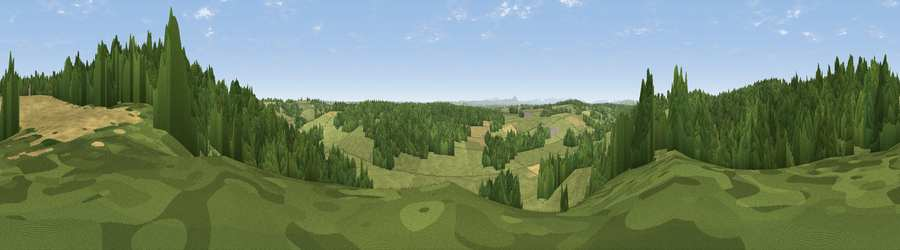

Viewpoint near Hookgate
#23790 in England · top 40% of its area beats it · near HookgateThe view, rendered

A 360° render of this exact spot computed from the terrain model, tree cover and land cover — summer colours, afternoon light, calibrated against photographs of famous viewpoints. Real trees, hedges and buildings will differ in detail.
The panorama
Grey silhouette: terrain skyline in each direction (720 bearings, Earth curvature and refraction included). Dashed green: skyline with trees (+15 m) and buildings (+8 m) as obstacles. Blue strip: how far the ground is visible on each bearing.
Where the view opens
Wedge length = distance to the farthest visible ground on that bearing (vegetation-aware). Rings at 10, 25 and 50 km.
What fills the view
45% grassland · 43% woodland · 11% cropland
Angular shares of the visible panorama (visual magnitude), not map area. Landscape diversity 0.43 (0–1 Shannon).
Key numbers
More beautiful places nearby
The staircase of upgrades: each row has a higher view potential than everything closer. Driving times are estimates from straight-line distance, calibrated against real road routing — check an actual route before setting out.
| Place | Direction | Drive | Score |
|---|---|---|---|
| Viewpoint near Hales | W · 2 km | ~5 min | 53.9 |
| Viewpoint near Hookgate | N · 3 km | ~7 min | 57.3 |
| Viewpoint near Loggerheads | NNW · 4 km | ~9 min | 61.6 |
| Viewpoint near Madeley | N · 11 km | ~21 min | 62.5 |
| Viewpoint near Madeley | N · 11 km | ~21 min | 66.7 |
| Kenstone Hill | WSW · 17 km | ~29 min | 74.0 |
| Viewpoint near Marchamley | WSW · 17 km | ~29 min | 77.5 |
| The Ercall | SSW · 26 km | ~41 min | 79.4 |
52.89544, -2.37269 · source: screening · position refined by local search. Computed location — check access rights before visiting.